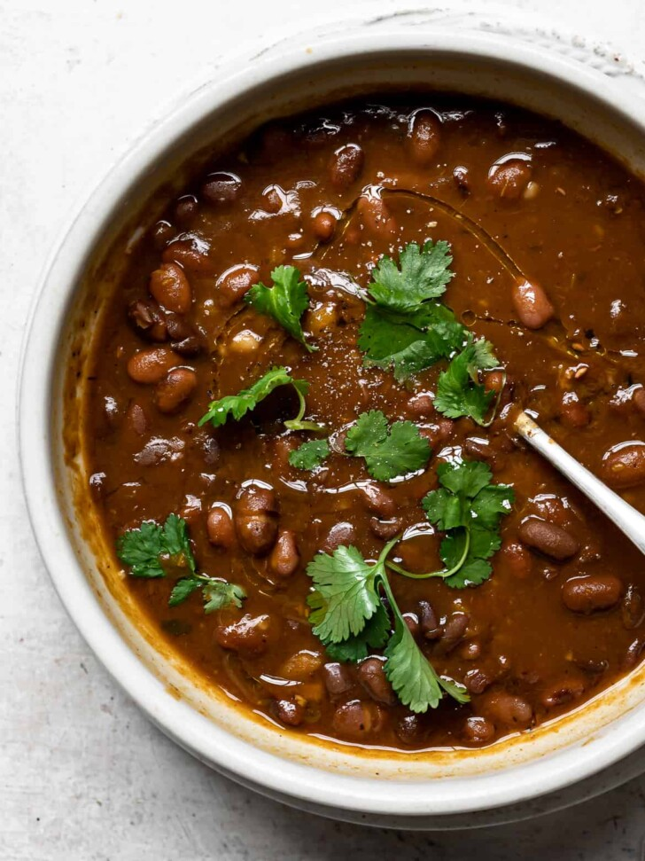

Dominican Beans

What Makes Dominican beans goated?
To me, Dominican stewed beans are the ultimate comfort food from my childhood. It is a food charged with memory and longing that evokes hominess and a feeling of well-being like no other. Habichuelas guisadas, beans that have been stewed until tender then flavoured with onions, green pepper, garlic, and spices, is a dish made from humble ingredients yet deliciously luxurious and satisfying. These creamy beans swimming in their cooking liquid are so rich in flavour and substance, they can stand in for a fantastic main meal. I may be biased, but I think you will love them as much as I do.
Ingredients
- 1 lb dried red kidney beans
- 1 bay leaf
- 3 teaspoons kosher salt, divided or more to taste
- 2 tablespoons olive oil
- 1 red onion cut into wedges
- 1 bell green pepper cut in 6 pieces (or cubanelle pepper)
- 4 cloves garlic peeled and crushed
- 1 teaspoon dried oregano
- 2 tablespoons tomato paste
- 1 chicken or vegetable bouillon cube low sodium
- freshly cracked black pepper to taste
- 3/4 - 1 pound squash such as kabocha, pumpkin or butternut peeled and cut into 2-inch pieces
- a handful of cilantro sprigs
- 2 teaspoons white vinegar optional
Steps
- Pick over the beans for small rocks or debris and discard any that are damaged or discoloured. Rinse well and drain.
- Place the rinsed beans, 1 teaspoon salt, and 1 bay leaf in the Instant Pot. Add 5 cups of water, close the lid and set the valve to "seal". Pressure cook on high for 20 minutes. When finished, allow to natural release for at least ten minutes, and then carefully finish with quick release. Soaked beans will cook more quickly than unsoaked beans so if you used soaked beans, reduce the time by 5 minutes.
- While the pressure is releasing, heat 2 tablespoons olive oil in a large heavy-bottomed pot over medium heat. Add onion, green pepper, garlic, and oregano and sauté until slightly softened, about 4-5 minutes. Add the tomato paste, and bouillon cube, if using. Sauté another 2 minutes.
- Add the cooked beans and liquid from the Instant Pot to the pot with sautéed vegetables, along with 2 teaspoons salt, and freshly cracked black pepper to taste. Stir in the squash and cilantro sprigs and bring to a gentle boil.
- Continue to cook, uncovered, over medium heat until the broth thickens and becomes really creamy, about 25-30 minutes. Drizzle in the vinegar, if using. Taste and add more salt and pepper, if needed. If the liquid is not thick enough, mash a few beans on the side of the pot, stir well, and cook for an additional few minutes. The liquid should be creamy -- not super thick but not too thin.
- *Before serving, pick out and discard the bay leaf and the cooked chuncks of onion and green pepper. Serve warm with optional sides or toppings.